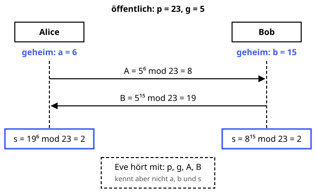

Diffie-Hellman-Schlüsselaustausch
Zwei Köche einigen sich auf ein Geheimrezept, obwohl alle zuhören.
Definition
Mit dem Diffie-Hellman-Verfahren (Whitfield Diffie und Martin Hellman, 1976) können sich zwei Parteien über eine öffentliche Leitung auf einen gemeinsamen geheimen Schlüssel einigen, ohne ihn jemals zu übertragen. Ein Lauscher sieht alle Nachrichten, kann den Schlüssel aber nicht berechnen – dafür müsste er das Problem des diskreten Logarithmus lösen.
Zutaten
- Eine große Primzahl p (öffentlich)
- Ein Generator g (öffentlich)
- Eine geheime Zufallszahl a von Alice
- Eine geheime Zufallszahl b von Bob
Zubereitung
- Alice und Bob einigen sich öffentlich auf p und g.
- Alice wählt geheim a und schickt A = ga mod p an Bob.
- Bob wählt geheim b und schickt B = gb mod p an Alice.
- Alice rechnet s = Ba mod p.
- Bob rechnet s = Ab mod p.
- Beide haben jetzt denselben Wert s = gab mod p und leiten daraus z. B. einen AES-Schlüssel ab.
Skizze

Über die Leitung gehen nur A und B. Aus dem eigenen Geheimnis und dem Wert des anderen berechnen beide dasselbe s.
Skizze erstellt von Claude (KI)
Demo
Platzhalter für die Demo
Tipps
- Bekannte Analogie: Beide mischen eine gemeinsame Grundfarbe mit ihrer Geheimfarbe und tauschen die Mischungen. Mischen ist leicht, Entmischen fast unmöglich.
- Diffie-Hellman allein authentisiert niemanden – ein Angreifer in der Mitte (Man-in-the-Middle) kann mit beiden getrennt einen Schlüssel aushandeln. Darum kombiniert man es mit Signaturen und Zertifikaten.
- Heute nimmt man meist elliptische Kurven (ECDH, z. B. X25519) – gleiche Idee, kürzere Schlüssel.
- Für jede Sitzung neue a und b wählen: Dann bleiben alte Sitzungen geheim, selbst wenn später ein Langzeitschlüssel gestohlen wird (Forward Secrecy).
- Ein Quantencomputer könnte den diskreten Logarithmus mit dem Shor-Algorithmus lösen. Der quantensichere Ersatz ist ML-KEM, meist hybrid zusammen mit X25519.